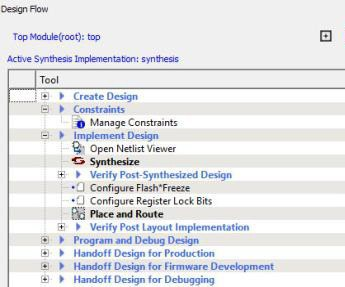
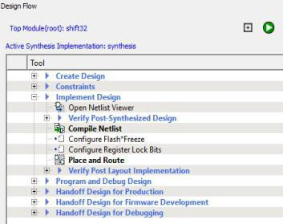
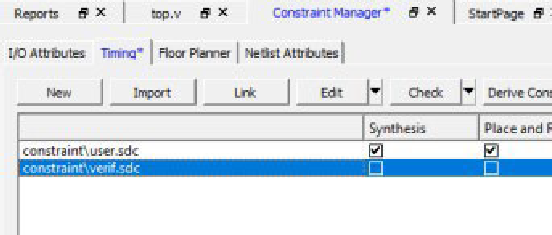
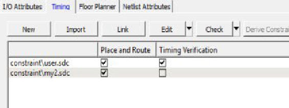
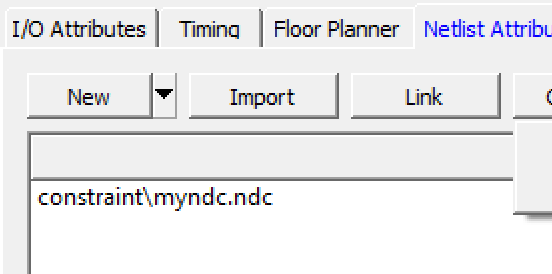
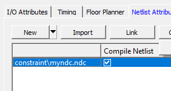
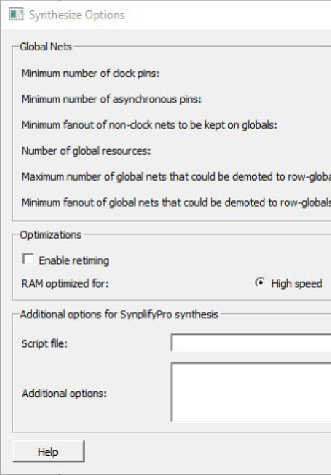
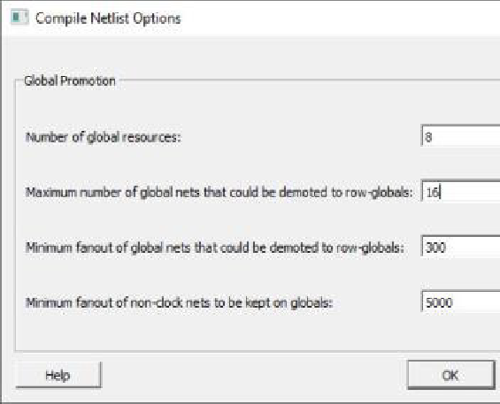

3.1 Overview
(Ask a Question)The following topics provide an overview of Libero SoC.
3.1.1 Libero SoC Design Flow
(Ask a Question)The following figure shows the Libero SoC design flow.
3.1.1.1 Creating the Design
(Ask a Question)Create your design with the following design capture tools:
- System Builder
- Create SmartDesign
- Create HDL
- Create SmartDesign Testbench (optional, for simulation only)
- Create HDL Testbench (optional, for simulation only)
After you create the design, start the simulation for pre-synthesis verification.
You can also click the button to start the Libero SoC software through Place and Route with default settings. However, doing so bypasses constraint management.
3.1.1.2 Working with Constraints
(Ask a Question)In the FPGA design world, constraint files are as important as design source files. Constraint files are used throughout the FPGA design process to guide FPGA tools to achieve the timing and power requirements of the design. For the synthesis step, SDC timing constraints set the performance goals whereas non-timing FDC constraints guide the Synthesis tool for optimization. For the Place and Route step, SDC timing constraints guide the tool to achieve the timing requirements, whereas Physical Design Constraints (PDC) guide the tool for optimized placement and routing (Floorplanning). For Static Timing Analysis, SDC timing constraints set the timing requirements and design-specific timing exceptions for static timing analysis.
Libero SoC provides the Constraint Manager to manage your design constraint needs. Constraint Manager is a single centralized graphical interface that allows you to create, import, link, check, delete, and edit design constraints, and associate the constraint files to design tools in the Libero SoC environment. Constraint Manager also allows you to manage constraints for SynplifyPro synthesis, Libero SoC Place and Route, and the SmartTime Timing Analysis throughout the design process.
After project creation, double-click Manage Constraints in the Design Flow window to open the Constraint Manager.
3.1.1.2.1 Constraint Flow and Design Sources
(Ask a Question)The Constraint flow supports HDL and Netlist design sources. The Libero SoC Design Flow window and the Constraint Manager are context-sensitive according to whether the design source is HDL or Netlist.
3.1.1.2.2 Constraint Flow for VM Netlist Designs
(Ask a Question)When the design source is a Netlist, the Design Flow window displays Compile Netlist as a design step. Timing constraints can be passed to Place and Route and Timing Verification only.
The options to promote or demote global resources of the chip are set in the Compile Netlist options. The following figure compares and contrasts the HDL flow versus the Netlist flow.
HDL Flow | Netlist Flow |
 Design Flow Window |  Design Flow Window |
 Constraint Manager |  Constraint Manager |
 Constraint Manager - Check *.fdc and *.ndc |  Constraint Manager - Check *.ndc only |
 Global Promotion/Demotion Options set in Synthesis Options Dialog Box |  Global Promotion/Demotion Options set in Compile Netlist Options Dialog Box |
3.1.1.2.3 Constraint Flow for HDL Designs
(Ask a Question)When the design source is HDL, the Design Flow window displays Synthesis as a design step. The Constraint Manager also makes available Synthesis as a target to receive timing constraints and netlist attribute constraints. The options to promote or demote global resources of the chip are set in the Synthesis options.
3.1.1.3 Implementing the Design
(Ask a Question)The following references provide information about implementing your design.
- Netlist Viewer User Guide
- 3.6.1 Synthesize. This procedure runs synthesis on your design with the default settings and passes to Synplify the constraints associated with Synthesis in the Constraint Manager.
- 3.6.2 Verifying Post-Synthesized Designs
- 3.6.4 Configure Flash*Freeze (SmartFusion 2 and IGLOO 2)
- 3.6.5 Configure Register Lock Bits
- 3.6.7 Place and Route. Takes the design constraints from the Constraint Manager and uses default settings. This is the last step in the push-button design flow execution.
- 3.6.12 Verify Post Layout Implementation
3.1.1.4 Programming and Debugging the Design
(Ask a Question)The following topics provide information about programming and debugging your design.
Generating and Updating Data
- 3.8.1 Generating FPGA Array Data
- 3.8.2 Initializing Design Blocks (PolarFire and PolarFire SoC)
- 3.8.3 Generating Initialization Clients (PolarFire)
Configuring the Hardware
- 3.8.13 Configuring Actions and Procedures
- 3.8.8 Configuring I/O States During JTAG Programming
- 3.8.9 Configuring Programming Options
Programming the Design
- 3.8.1 Generating FPGA Array Data
- 3.8.2 Initializing Design Blocks (PolarFire and PolarFire SoC)
- 3.8.3 Generating Initialization Clients (PolarFire)
- 3.8.13 Configuring Actions and Procedures
- 3.8.8 Configuring I/O States During JTAG Programming
- 3.8.9 Configuring Programming Options
- 3.8.10 Configuring Security
- 3.13.6 Configure Security Locks for Production
- 3.8.11 Configuring Bitstreams
- 3.8.12 Generating the Bitstream
- 3.8.14 Running Programming Device Actions
- 3.8.15 Programming SPI Flash Image (PolarFire and PolarFire SoC)
Debugging the Design
3.1.1.5 Handing Off the Design to Production
(Ask a Question)The following topics provide information about handing off your design to production.
- 3.10.2 Exporting Bitstreams
- 3.10.3 Exporting FlashPro Express Jobs
- 3.10.4 Exporting Job Manager Data
- 3.10.5 Export a SPI Flash Image (PolarFire and PolarFire SoC)
- 3.10.6 Exporting Pin Reports
- 3.10.7 Exporting BSDL Files
- 3.10.8 Exporting IBIS Models
- 3.10.9 Export Initialization Data and Memory Report (PolarFire and PolarFire SoC)
- 3.10.10 Exporting μPROM Reports (RTG4)
- 3.12.1 Exporting SmartDebug Data
3.1.1.6 Handing Off Design for Firmware (SmartFusion® 2, IGLOO® 2, and RTG4™)
(Ask a Question)The following topics provide information about handing off your design for firmware. These topics apply to SmartFusion 2, IGLOO 2, and RTG4.
3.1.2 File Types in Libero SoC
(Ask a Question)Creating a new project in Libero SoC creates new directories and project files automatically. The project directory contains your local project files. When you import files from outside your current project, the files are copied into your local project folder.
The Project Manager allows you to manage your files as you import them. For example, to store and maintain your design source files and design constraint files in a central location outside the project location, you can link them to the Libero project folders when you created the project. These files are linked, not copied, to the project folder.
<project_name> |
This is the top-level directory. It contains the
|
component |
Contains SmartDesign components (.sdb and
.cxf files) and the
*_manifest.txt file for each design component
in your Libero SoC project. To run synthesis, simulation, and
firmware development with your own point tools outside the Libero
SoC environment, see the *_manifest.txt file. For
each design component, Libero SoC generates a
<component_name>_manifest.txt file that
stores the file name and location of:
To run synthesis, simulation, firmware development, programming, and power analysis outside the Libero SoC environment, see the SmartFusion 2/IGLOO 2 Custom Flow User Guide. Note: When
importing components, make sure that
.sdb
and .cxf files reside in the same
directory. |
constraint |
Contains all the constraint files:
|
designer |
Contains the following files:
|
hdl |
Contains all HDL sources:
|
simulation |
Contains the following files for simulation:
|
smartgen |
Contains GEN files and LOG files from generated cores. |
stimulus |
Contains BTIM, Verilog, and VHDL stimulus files. |
synthesis |
Contains files generated by the tools (not managed by Libero
SoC), including:
|
viewdraw |
Contains viewdraw.ini files. |
3.1.2.1 Internal Files
(Ask a Question)Libero SoC generates the following internal files, some of which are encrypted. These files are for Libero SoC housekeeping and are not intended for you to use.
| File | File Extension | Remarks |
|---|---|---|
Routing Segmentation File | *.seg | None |
Combiner Info | *.cob | None |
Hierarchical Netlist | *.adl | None |
Flattened Netlist | *.afl | None |
Location file | *.loc | None |
map file | *.map | Fabric Programming File |
tieoffs.txt | *.txt | RTG4 devices only |
3.1.3 Software Tools
(Ask a Question)Libero SoC integrates design tools, streamlines design flow, manages design and log files, and passes design data between tools. The following table identifies the tools you can use to perform Libero SoC functions. For more information about Libero SoC tools, visit www.microchip.com/en-us/products/fpgas-and-plds/fpga-and-soc-design-tools/fpga/libero-software-later-versions#overview.
| Function | Tool | Comments |
|---|---|---|
Project Manager, HDL Editor, Core Generation | Libero SoC | Project Manager, HDL Editor targets the creation of HDL code. HDL Editor supports VHDL and Verilog with color, highlighting keywords for both HDL languages. |
Synthesis | Synplify® Pro ME | Synplify Pro ME is integrated as part of the design package, enabling designers to target HDL code to specific devices. |
Simulation | ModelSim® ME Pro | Allows source-level verification so designers can verify HDL code. Designers can perform simulation at all levels: behavioral (or pre-synthesis), structural (or post-synthesis), and dynamic simulation. |
Timing/Constraints, Power Analysis, Netlist Viewer, Floorplanning, Package Editing, Place and Route, Debugging | Libero SoC | This software package includes:
|
3.1.4 Software IDE Integration
(Ask a Question)Libero SoC simplifies the task of transitioning between designing your FPGA and developing your embedded firmware by managing the firmware for your FPGA hardware design. This includes managing:
- Firmware hardware abstraction layers required for your processor.
- Firmware drivers for the processor peripherals in your FPGA design.
- Sample application projects available for drivers that show how to use the APIs properly.
To see which firmware drivers Libero SoC found to be compatible with your design, open the Firmware View. From this view, you can change the configuration of your firmware, change to a different version, read driver documentation, and generate sample projects for each driver.
Libero SoC manages the integration of your firmware with your preferred Software Development Environment, including SoftConsole, Keil, and IAR Embedded Workbench. The projects and workspace for your selected development environment are generated automatically with the proper settings and flags so you can write your applications immediately.